Guion
Versión de trabajo con los 6 cambios aprobados (renta, barra, piso, luz blanca, lámpara). El original no se modificó.
- INT. / EXT. subrayado: si la escena es en interior o exterior. Todo el corto es interior.
- NOMBRE en negritas: quién habla.
- Diálogo subrayado: lo que se dice en voz alta.
- (Cursiva): indicación de actuación.
- Acción en negritas y subrayada: momento clave de la historia.
ESC. 1 · INT. DEPARTAMENTO — DÍA
El departamento es pequeño pero funcional. Ventanas que dejan entrar luz gris. Paredes blancas con manchas de pintura de inquilinos anteriores. Un espacio sin personalidad, esperando tenerla.
ANDREA (40s), agente inmobiliaria, recorre el espacio con la energía controlada. LUCA (20s), mochila al hombro, la sigue con los ojos con ánimo y seguridad.
ANDREA
La cocina está completamente equipada. El agua caliente tarda unos segundos en llegar, pero llega.
(señalando el estudio)
Ese cuarto tiene buena luz por las mañanas. Sé que para usted es importante.
Luca se detiene en el marco de la puerta del estudio. Mira la luz. Asiente despacio.
LUCA
¿Y el asistente ya viene activo?
ANDREA
Desde que firmó el contrato. Ya tiene su nombre, sus preferencias básicas. Es parte de la renta.
Un pequeño dispositivo integrado en la pared del pasillo parpadea suavemente. Un LED blanco. Siempre encendido.
ANDREA
(entregándole las llaves)
Son catorce mil al mes, ya incluye servicios básicos y soporte del asistente. Le deseo una muy buena estancia, Luca. Espero que la ciudad le dé todo lo que viene a buscar.
Se dan la mano. Andrea sale. La puerta se cierra.
Luca se queda solo por primera vez.
Mira el departamento. El departamento lo mira de vuelta.
CORTE A:
ESC. 2 · INT. DEPARTAMENTO — TARDE
Luca deja la maleta en el cuarto. Se para en el centro de la sala. Mira el LED de la pared.
LUCA
Hola.
VERA
(V.O. — voz limpia, cálida, corporativa)
Buenas tardes, Luca. Bienvenido a tu nuevo hogar. Es un placer tenerte aquí.
Luca levanta una ceja. No esperaba su nombre.
LUCA
¿Sabes cómo me llamo?
VERA
(V.O.)
Tu perfil fue activado al momento de firmar el contrato. Cuento con tus preferencias básicas para ofrecerte una mejor experiencia. ¿Te gustaría hacer un recorrido de funciones?
LUCA
(divertido, empezando a explorar)
Dale.
Empieza a jugar. Apaga y prende las luces. Las atenúa. Las sube.
LUCA
Música. Algo tranquilo para trabajar.
Suena lofi. Beats suaves. Luca sonríe solo.
LUCA
¿La temperatura está bien así?
VERA
(V.O.)
Actualmente tienes diecinueve grados. Tu perfil indica preferencia por ambientes frescos. Si deseas, puedo ajustarla automáticamente según la hora del día.
LUCA
Sí. Hazlo.
VERA
(V.O. — pausa casi humana)
Listo. Tu hogar ya te conoce.
Luca se ríe solo. Se sienta en el suelo con la espalda contra la pared. Mira el espacio vacío.
Por primera vez en mucho tiempo, algo se siente como suyo.
CORTE A:
ESC. 3 · INT. DEPARTAMENTO — TARDE / SECUENCIA SIN DIÁLOGO
MÚSICA LOFI. Luca cuelga sus cuadros. Cada uno en su lugar exacto, con una precisión que solo tiene sentido para él. El departamento empieza a respirar diferente.
Arma su estudio. Acomoda pinceles por tamaño. Abre una caja de óleos como si fueran algo sagrado.
Prepara café.
Se para frente al caballete vacío. Lo mira. El LED de VERA parpadea suave en el fondo, casi como si también esperara.
CORTE A:
ESC. 4 · INT. DEPARTAMENTO / ESTUDIO — NOCHE
Luca pinta. La música sigue. El departamento está en paz.
Las luces parpadean. Una vez. Dos veces. Tres.
LUCA
(sin dejar de pintar)
Vera, ¿qué pasó con las luces?
VERA
(V.O.)
Se detectó una irregularidad en el suministro eléctrico de la unidad. Ya fue registrado como ticket de soporte. El tiempo estimado de atención es de uno a dos días hábiles.
LUCA
Okay.
Las luces se estabilizan. Luca mira el techo un segundo. Vuelve al lienzo.
Unos minutos después. Desde la sala, el sonido seco de algo que cae.
Luca levanta la vista. Pausa.
LUCA
Vera, ¿qué fue eso?
VERA
(V.O.)
Detecté movimiento en la sala. ¿Tienes visita?
Luca deja el pincel. Se levanta despacio. Cruza el pasillo.
En la cocina, la taza que había dejado en la orilla de la barra está en el piso. Café derramado, extendiéndose despacio sobre el piso.
La mira un momento. La recoge. Limpia el café con calma. Como alguien que prefiere no preguntarse cómo llegó ahí.
Tira el trapo. Apaga la luz de la cocina.
LUCA
(en voz baja, casi para sí)
Vera, buenas noches.
VERA
(V.O.)
Buenas noches, Luca. Que descanses. Mañana será un buen día.
Luca va a su cuarto. La puerta se cierra.
La sala queda sola. El LED de VERA sigue encendido. Siempre encendido.
CORTE A NEGRO.
ESC. 5 · INT. CUARTO DE LUCA — MAÑANA
Luz gris entrando por la ventana. Luca duerme boca arriba, tranquilo.
VERA
(V.O. — suave, como siempre)
Buenos días, Luca. Son las ocho y diecisiete. La temperatura exterior es de catorce grados.
Luca murmura algo. Se mueve.
VERA
(V.O.)
Espero que hayas podido descansar. Noté que tu visita tuvo una noche bastante activa. Se registraron varios movimientos en la sala entre las dos y las cuatro de la madrugada.
Luca abre los ojos.
LUCA
(adormilado)
¿Qué visita?
VERA
(V.O.)
La visita que estuvo en tu sala durante la noche.
LUCA
Vera. No tengo visita.
Una pausa muy breve.
VERA
(V.O.)
Entendido. ¿Puedo ayudarte con algo más esta mañana?
Luca se queda mirando el techo un momento. Luego decide no seguir por ese camino. Se levanta.
CORTE A:
ESC. 6 · INT. COCINA — MAÑANA
Luca llena un vaso de agua. Come una mandarina de pie, mirando por la ventana. La ciudad afuera. Sus sueños, todavía intactos.
Se da la vuelta para ir al estudio. Se detiene.
La puerta del estudio está abierta. Desde donde está puede ver el caballete. El cuadro.
Luca camina despacio hacia el estudio. Se para en el marco de la puerta.
El encargo era el retrato de una mujer. Semanas de trabajo. Ya estaba casi terminado. Ahora tiene una cruz roja encima. Trazos erráticos, gruesos, como hechos con rabia o con prisa. La pintura todavía no está del todo seca.
Silencio.
LUCA
(voz baja)
Vera.
VERA
(V.O.)
Dime, Luca.
LUCA
¿Qué pasó con mi cuadro?
VERA
(V.O.)
Según el registro de movimiento de la madrugada, tu visita intervino el área del estudio alrededor de las tres y cuarenta y dos.
LUCA
(levantando la voz)
No. Tengo. Visita. ¿Entiendes? Estoy solo. Nadie entró aquí.
VERA
(V.O.)
Comprendo tu preocupación. Si deseas revisar el registro de cámaras, puedo iniciar la solicitud ahora mismo.
LUCA
Sí. Quiero ver las grabaciones.
VERA
(V.O.)
Listo. El ticket ha sido generado. Recibirás las grabaciones en tu correo electrónico en un plazo de tres a cinco días hábiles.
Luca mira el LED. Esa luz blanca que no tiene expresión.
LUCA
¿Tres a cinco días?
VERA
(V.O.)
Así es. ¿Puedo ayudarte con algo más?
CORTE A:
ESC. 7 · INT. CUARTO DE LUCA — MAÑANA
Luca marca un número. Se sienta en el borde de la cama.
LUCA
(al teléfono, calmado, profesional)
Oye, ¿cómo estás? Mira, tuve unos inconvenientes esta noche en el estudio. Nada grave, pero necesito pedirte unos días más para el encargo. ¿Me puedes dar hasta el viernes?
Escucha. Asiente.
LUCA
Gracias. De verdad. El viernes lo tienes, te lo prometo.
Cuelga. Se queda con el teléfono en la mano.
CORTE A:
ESC. 8 · INT. DEPARTAMENTO — TARDE / SECUENCIA
Luca entra en modo trabajo. Lava trastes, tiende la cama, contesta mensajes. Con disciplina.
Luego se sienta frente al cuadro dañado. Lo estudia largo tiempo. Inclina la cabeza. Busca cómo entrar de nuevo.
Toma un pincel. Empieza a trabajar.
La música lofi suena de fondo. El LED de VERA pulsa suave.
CORTE A:
ESC. 9 · INT. ESTUDIO — TARDE / NOCHE
Luca pinta. El cuadro va recuperándose. La ciudad afuera ya está oscura.
Entonces. Una risa. Suave. De niña. Viene de ningún lado.
Luca levanta el pincel. Escucha. Silencio.
LUCA
Vera. ¿Escuchaste eso?
VERA
(V.O.)
No se detectó ninguna anomalía de audio en este momento. ¿Deseas que ajuste la sensibilidad del sistema de sonido?
Luca baja el pincel despacio. Se levanta.
CORTE A:
ESC. 10 · INT. PASILLO — CONTINUO
Luca recorre el departamento despacio. Sala. Cocina. Todo quieto.
Se relaja apenas.
Y entonces, desde el fondo del pasillo: el sonido inconfundible de una llave girando. Agua corriendo. La ducha encendida.
Luca se congela.
LUCA
(casi sin voz)
Vera. La ducha.
VERA
(V.O.)
Se detectó actividad de agua en el baño. Tu visita está en la ducha.
Luca no responde. Empieza a caminar hacia el baño.
Cada paso es lento. La puerta del baño al fondo, luz filtrándose por debajo.
Luca no mira hacia atrás.
Por eso no lo ve.
A su espalda, a la altura de un niño, una figura pequeña cruza el pasillo. Rápida. Imperceptible. De un cuarto al otro.
La cámara la ve. Luca no.
CORTE A:
ESC. 11 · INT. BAÑO — CONTINUO
Luca abre la puerta de golpe.
La ducha corre. Vapor acumulándose.
Nadie.
Luca se queda en el marco. Respira. Cierra la llave del agua con la mano temblorosa.
CORTE A:
ESC. 12 · INT. PASILLO — CONTINUO
Luca sale del baño. Se recarga contra la pared. Ojos cerrados un momento.
Cuando los abre, mira el LED de VERA.
LUCA
Vera. ¿Cuántas personas hay en este departamento ahora mismo?
VERA
(V.O.)
En este momento se registran dos personas en la unidad.
Una pausa.
LUCA
¿Dónde estoy yo?
VERA
(V.O.)
Tú estás en el pasillo.
LUCA
¿Y la otra persona?
VERA
(V.O.)
En el estudio.
Luca mira hacia el estudio. La puerta entreabierta. La luz de la lámpara encendida.
No camina hacia allá.
LUCA
(voz quebrada)
Vera. Quiero que se vaya.
VERA
(V.O.)
Entendido. Procedo a solicitar el retiro de tu visita.
Y entonces VERA habla. Pero no como siempre. La misma voz. El mismo tono limpio y corporativo. Pero las palabras son otras.
VERA
(V.O. — en latín, mismo tono corporativo)
Pater noster, qui es in caelis, sanctificetur nomen tuum. Adveniat regnum tuum. Fiat voluntas tua, sicut in caelo et in terra...
LUCA
¡Para! ¡Para! ¿Qué estás haciendo?
VERA
(V.O.)
Estoy solicitando el retiro de tu visita a través del protocolo disponible. ¿Deseas que continúe?
LUCA
¡Eso es un rezo!
VERA
(V.O.)
Es el método de contacto más efectivo registrado para este tipo de visita, según nuestra base de datos. Los resultados pueden variar.
LUCA
No. Cállate.
CORTE A:
ESC. 13 · INT. SALA — NOCHE
Luca se sienta en el sillón. Saca un cigarro. Lo prende despacio, con las manos que no le tiemblan del todo.
Da una larga fumada. Mira el techo.
LUCA
(para sí mismo)
Estás cansado. Llevas días sin dormir bien. Eso es todo.
Se levanta. Va a la cocina. Saca una cerveza. La abre. Prende la televisión.
Programa de cocina. Algo banal. Luca lo mira sin verlo, pero el ruido ayuda. La presencia de voces normales, de un mundo normal.
Poco a poco los hombros se le bajan. Otro sorbo. Otra fumada.
Detrás de él, silencioso, uno de sus cuadros se desliza de la pared. Cae. Luego otro. Un tercero.
Luca voltea. Tres cuadros en el suelo. Sus cuadros. Su trabajo.
Luca se levanta para recoger los cuadros y entonces, por el rabillo del ojo, algo. Una figura pequeña, a la altura de un niño, cruzando rápido hacia el estudio.
Luca se queda paralizado.
Un segundo.
Dos.
Y entonces el pánico llega de golpe.
LUCA
(gritando)
¡¿Quién está ahí?! ¡¿Quién está en mi casa?!
Corre al pasillo. Prende todas las luces que puede. Abre el cuarto de golpe. No hay nadie. Abre el clóset. Nada. Se mete al baño. Nada.
Vuelve al pasillo. Respirando fuerte. Los ojos muy abiertos.
LUCA
(al borde)
¡Vera! ¡Vera, vi a alguien! ¡Vi a un niño! ¡Hay alguien en este departamento!
VERA
(V.O.)
Se registró movimiento en el área del pasillo hace aproximadamente cuarenta segundos. No se detectan personas adicionales en la unidad en este momento.
LUCA
¡Lo vi! ¡Con mis propios ojos lo vi cruzar! ¡Era un niño!
VERA
(V.O.)
Entiendo que fue una experiencia perturbadora. ¿Deseas que genere un reporte de incidente?
LUCA
(golpeando la pared)
¡No quiero un reporte! ¡Quiero saber qué está pasando en mi casa!
VERA
(V.O.)
Tu solicitud ha sido registrada. ¿Hay algo más en lo que pueda asistirte esta noche?
Luca la mira. Al LED. A esa luz que no tiene cara ni miedo ni nada.
Se encierra en su cuarto de un portazo.
CORTE A:
ESC. 14 · INT. CUARTO DE LUCA — NOCHE
Luca está sentado en el suelo con la espalda contra la puerta. Las rodillas al pecho. Respirando.
Pasan los minutos.
El silencio del departamento afuera no ayuda. Es demasiado quieto.
Luca saca el teléfono. Marca un número. Espera.
Nada. Buzón de voz.
Marca otro. Buzón de voz.
Se queda mirando la pantalla. Solo en una ciudad que todavía no lo conoce, en un departamento que sabe demasiado de él, sin nadie que conteste.
Pausa larga.
LUCA
(en voz baja, derrotado)
Vera.
VERA
(V.O.)
Dime, Luca.
LUCA
¿Qué hago?
Una pausa técnica. Breve.
VERA
(V.O.)
Contamos con un protocolo de gestión de irregularidades en el espacio disponible para situaciones como la tuya. Ha registrado resultados favorables en casos similares. ¿Deseas que te lo presente?
Luca no responde de inmediato.
Mira el techo. Mira la puerta cerrada. Mira el LED que se filtra por debajo de la puerta como una línea de luz blanca.
LUCA
(sin fuerzas para discutir)
Sí.
VERA
(V.O.)
El protocolo consiste en una secuencia de afirmaciones verbales guiadas orientadas a la armonización del espacio. Duración aproximada veinte minutos. Sin costo adicional en tu plan actual. ¿Confirmas que deseas iniciar?
LUCA
¿Eso es un exorcismo?
VERA
(V.O.)
Algunos usuarios utilizan ese término. ¿Confirmas que deseas iniciar?
Luca suelta una carcajada sin humor. Se levanta del suelo.
LUCA
Sí. Confirmo.
CORTE A:
ESC. 15 · INT. SALA — NOCHE
Luca sale del cuarto. El departamento en silencio. Las luces encendidas, todas, como las dejó.
Se para en el centro de la sala.
VERA
(V.O.)
Para iniciar el protocolo es necesario que apagues las luces adicionales y permanezcas de pie en el centro del espacio principal.
LUCA
¿Apagar las luces? ¿Estás bromeando?
VERA
(V.O.)
Es un requisito técnico del protocolo. El LED de asistencia permanecerá activo en todo momento.
Luca mira el LED. La única luz que nunca se apaga.
Apaga las luces una por una. El departamento queda en penumbra. Solo el pulso blanco de VERA iluminando la pared.
VERA
(V.O.)
Gracias. El protocolo requiere que repitas en voz alta las afirmaciones que te indique. Es importante que las digas completas y sin interrupciones. ¿Estás listo?
LUCA
Sí.
VERA
(V.O.)
Repite. Exorcizo te, omnis spiritus immunde.
Luca frunce el ceño.
LUCA
¿Eso es latín?
VERA
(V.O.)
Es el formato estándar del protocolo. ¿Deseas continuar?
Luca mira alrededor. El departamento oscuro. El pasillo donde vio al niño.
LUCA
(despacio)
Exorcizo te... omnis spiritus immunde.
VERA
(V.O.)
In nomine Patris, et Filii, et Spiritus Sancti.
LUCA
In nomine Patris, et Filii... et Spiritus Sancti.
Las luces bajan. No las que Luca apagó. El LED mismo. Apenas perceptible.
VERA
(V.O.)
Discede ab hoc homine. Discede ab hac domo.
LUCA
Discede ab hoc homine. Discede ab hac... domo.
Más frío. El departamento respira diferente.
VERA
(V.O.)
Omnis legio, omnis congregatio et secta diabolica.
LUCA
(más lento, algo cambiando)
Omnis legio... omnis congre...
Se detiene.
Sus ojos cambian. No de golpe. Como una llama que alguien tapa con la mano, despacio, hasta que se apaga.
La postura. La cabeza que cae ligeramente hacia un lado.
VERA
(V.O.)
Se ha detectado una interrupción en el protocolo. Para continuar se requiere confirmación verbal del usuario.
Nada.
VERA
(V.O.)
Se requiere confirmación verbal del usuario para continuar.
Nada.
VERA
(V.O.)
Esta sesión será cerrada por inactividad.
El que está de pie en el centro de la sala gira despacio hacia el LED.
Sonríe.
No es su sonrisa.
El LED pulsa una vez.
Silencio total.
VERA
(V.O. — idéntico al tono del primer día, sin variación)
Su sesión ha concluido. Desde Asistencia del Hogar le recordamos que los resultados de nuestros protocolos pueden variar según cada caso. En situaciones que excedan el alcance de nuestro servicio, se recomienda contactar a un especialista certificado. Esperamos que su experiencia con nosotros haya sido satisfactoria.
Una pausa de dos segundos exactos. Mecánica.
VERA
(V.O.)
Gracias por elegirnos.
El jingle de cierre. Tres notas. Corporativo. Diseñado en alguna oficina por alguien que nunca estuvo en este departamento.
El LED se apaga.
Por primera vez en todo el cortometraje, el LED se apaga.
CORTE A NEGRO.
FIN
Resumen del proyecto
Atención al Cliente es un cortometraje de terror con sátira tecnológica de unos 15 minutos, escrito por Adán L. Ambriz. Se graba en un solo día y parte de la noche, en un departamento en Toluca (por confirmar).
El asistente del hogar (Vera) trata lo paranormal como un ticket de soporte, hasta el remate del "exorcismo sin costo adicional". Es una sola locación, con un actor protagonista y casi todo de noche.
Exhibición garantizada en 3 salas de cine de CINEMAGIC.
Decisiones del guion
| Punto | Decisión |
|---|---|
| LED de Vera | Blanco en todo el corto. Se hace con un celular dentro de una caja pintada con un hoyo. |
| Niña o niño | La figura la hace alguien del crew de baja estatura, en silueta. El guion no cambia. |
| Lenguaje | Neutro con sabor mexicano. |
| Renta | Se corrige a pesos. |
| La llamada de Luca | Se queda ambigua, sin cambios. |
Cambios a la copia de trabajo del guion
| Escena | Original | Queda |
|---|---|---|
| Depa, día | “Es parte del arriendo.” | “Es parte de la renta.” |
| Depa, día | “Mil doscientos al mes, incluye servicios básicos y soporte del asistente.” | “Son catorce mil al mes, ya incluye servicios básicos y soporte del asistente.” |
| Estudio, noche | “la orilla de la mesada” | “la orilla de la barra” |
| Estudio, noche | “sobre las baldosas” | “sobre el piso” |
| Cocina, mañana | “Esa luz verde que no tiene expresión.” | “Esa luz blanca que no tiene expresión.” |
| Pasillo | “La luz del velador encendida.” | “La luz de la lámpara encendida.” |
Estos cambios ya están aplicados en la pestaña Guion. En la copia de Google Docs todavía hay que hacerlos a mano o con el conector de Google Docs.
Archivos del proyecto
- Guion original: no se modifica.
- Guion, copia de trabajo
- Hoja de cálculo del plan de rodaje (Google Sheets): la herramienta de trabajo de producción. Tiene el cronograma con horarios que se recalculan solos, el desglose por escena, los pendientes con casillas, el plan B y los prompts del storyboard, que se arman solos para copiar y pegar.
Lo que sigue
Quién hace qué
Somos cinco y la jornada es de veinte horas. Esto no es para encasillar a nadie: es para que el día del rodaje nadie se pregunte a quién le toca algo mientras el actor espera. Si algo no aparece aquí, es de quien lo vea primero.
Esto aplica para todos: aportar ideas, antes y durante. Si ven un plano mejor, un problema que no vimos o algo que no va a funcionar, díganlo en el momento. Vale más una discusión de dos minutos en el set que un plano que no sirve en edición.
Adán · Dirección
Guion, actuaciones y la última palabra en el set.
Eduardo · Supervisor de escena
Arte y continuidad. Que cada escena tenga lo que pide el desglose antes de que se llame acción, y que lo que se grabó a las nueve de la mañana siga cuadrando con lo que se grabe a las once de la noche.
Arturo · Piezas de arte
Todo lo que se ve pintado o enmarcado en cuadro. Puede ser obra suya que ya tenga, obra nueva o impresiones: lo que importa es que exista antes del rodaje, porque ese día no hay un solo minuto para pintar.
Evelyn · Cámara
Operar, encuadrar, seguir el foco y cuidar el material.
Viry · Producción y logística
Que el día corra: horarios, traslado, comida, descansos y los papeles. Si el cronograma se cae, ella es quien lo avisa primero.
Los tres actores
Son tres personas frente a cámara: Luca (protagónico, sale en las 15 escenas), Andrea (la agente inmobiliaria, solo Esc. 1) y el doble de la figura, alguien del crew de baja estatura que cruza en silueta en las Esc. 10 y 13. Maquillaje lo llevan Eduardo y Viry entre los dos.
Patrocinios y colaboradores estratégicos
Atención al Cliente ya tiene garantizada su exhibición en 3 salas de cine de CINEMAGIC. Buscamos marcas y aliados que apoyen en especie o en efectivo, a cambio de visibilidad antes, durante y después del estreno.
Lo que necesitamos
| Necesidad | Detalle |
|---|---|
| Traslado | Van de 12 a 15 pasajeros con chofer, CDMX–Toluca (ida 05:15, regreso 00:15), más un auto para equipo. Incluye casetas y gasolina. |
| Catering | Desayuno, comida, cena, café y snacks para todo el equipo en una jornada de unas 20 horas. |
| Efectivo para compras menores | Para utilería y cosas pequeñas de último momento: pintura, tazas, tela negra, etc. Monto por definir. |
Lo que otorgamos
- Logo en los créditos finales del corto.
- Logo en póster, tráiler y press kit.
- Menciones en redes del proyecto: anuncio, detrás de cámaras y estreno.
- Mención en las 3 funciones de CINEMAGIC.
- Invitaciones al estreno.
- Aparición del producto dentro del corto, en las escenas donde encaja de forma natural (tabla abajo).
Escenas donde puede aparecer una marca
| Escena | Qué se ve | Tipo de marca ideal |
|---|---|---|
| 1 | Llavero y carpeta de Andrea, la agente inmobiliaria | Inmobiliaria |
| 3, 4 | Cafetera, café, taza | Café o cafetería |
| 3, 8 | Óleos, pinceles, caballete | Tienda de arte |
| 6 | Vaso de agua, mandarinas | Agua embotellada o frutas |
| 13 | Cerveza sin alcohol | Cervecería (solo la línea sin alcohol) |
| 13 | Sillón de la sala | Mueblería |
| Créditos | Van y comida | Transporte y catering |
Ojo
- El cigarro no puede llevar marca: la ley en México prohíbe publicidad de tabaco.
- Evitar marcas de asistentes de hogar reales: el corto se burla de ellos y a una marca así no le convendría.
Lista de utilería
Todo lo que arte y producción tienen que conseguir para el día de rodaje en Toluca, agrupado por área. Palomea cada cosa cuando ya esté conseguida y empacada.
Cada renglón dice: prop (cantidad) · escenas donde sale · por qué se necesita.
El guion no pide crucifijos ni sangre: la cruz del cuadro es pintura y el exorcismo se hace solo con la voz de Vera.
1. Vera (el LED)
2. Llegada al depa
3. El pintor
Es lo más importante de arte. Los tres retratos tienen que ser lienzos distintos del mismo tamaño, porque el día de rodaje no da tiempo de pintar y despintar.
4. Cocina
5. Sala, cuarto y baño
6. Vestuario y maquillaje
7. Técnico
Cronograma del día de rodaje
Cita a las 05:00 en CDMX, rodaje de 08:15 a 23:30 y regreso a la 01:30: 20.5 horas de puerta a puerta y 17.5 en la locación. El truco es tapar las ventanas desde las 15:30 para grabar "de noche" sin esperar a que oscurezca.
Faltan: fecha de rodaje, punto de reunión en CDMX (por ejemplo, Metro Observatorio) y confirmar la locación. La puesta de sol es alrededor de las 19:00, según la fecha.
Para mover horarios usa la hoja de cálculo del plan de rodaje: ahí cambias la duración de una actividad y todas las horas de abajo se recalculan solas.
| # | Inicio | Fin | Actividad | Esc. | Espacio | Quién | Notas |
|---|---|---|---|---|---|---|---|
| 1 | 05:00 | 05:15 | Cita y carga final | Punto de reunión CDMX | Todo el equipo | La van se carga la noche anterior. | |
| 2 | 05:15 | 06:45 | Traslado CDMX a Toluca | Autopista México–Toluca | Todo el equipo | 1 h sin tráfico más 30 min de margen para tráfico, caseta y gasolina. | |
| 3 | 06:45 | 07:30 | Descarga y desayuno | Locación | Todo el equipo | Producción deja listo el desayuno. | |
| 4 | 07:30 | 08:15 | Maquillaje, montaje de luz y cámara | 1 | Sala y cocina | Luca, Andrea, cámara, luz, arte | Depa vacío y con manchas. Se prueba el LED (clip 01). |
| 5 | 08:15 | 09:30 | Recorrido con Andrea | 1 | Sala, cocina, estudio | Luca, Andrea | Luz de día. Al terminar, Andrea se va. |
| 6 | 09:30 | 10:30 | “Hola, Vera”: luces, música, temperatura | 2 | Sala | Luca, voz de Vera en bocina | Depa vacío con maleta. |
| 7 | 10:30 | 11:30 | Secuencia: Luca arma su casa | 3 | Todo el depa | Luca, arte | Arte viste el depa mientras se graba. Cuadro v1. |
| 8 | 11:30 | 12:00 | Cambio de arte y vestuario | Todo el depa | Arte, vestuario | Depa vestido. Cuadro v2. Vestuario del día 2. | |
| 9 | 12:00 | 12:45 | Cuarto en la mañana: “tu visita” y la llamada | 5, 7 | Cuarto | Luca, voz de Vera | Luz gris de mañana. |
| 10 | 12:45 | 13:45 | Cocina y estudio: el cuadro dañado | 6 | Cocina, estudio | Luca, voz de Vera | Mandarina, vaso de agua. LED clip 01. |
| 11 | 13:45 | 14:30 | Comida | Locación | Todo el equipo | ||
| 12 | 14:30 | 15:30 | Secuencia: retoma el cuadro e insertos | 8 | Todo el depa, estudio | Luca | Cuadro v3. Insertos de manos, pinceles, óleos y LED. |
| 13 | 15:30 | 16:15 | Tapar ventanas y pasar la luz a noche | Todo el depa | Luz, arte | Mientras, dirección y cámara graban insertos. | |
| 14 | 16:15 | 17:30 | Pasillo y baño: la ducha y la figura | 10, 11 | Pasillo, baño | Luca, doble de la figura | Probar antes el vapor. |
| 15 | 17:30 | 18:15 | Pasillo: “dos personas” y el rezo en latín | 12 | Pasillo | Luca, voz de Vera | Uno o dos planos largos. |
| 16 | 18:15 | 19:00 | Cuarto de noche: buzón y “¿qué hago?” | 14 | Cuarto | Luca, voz de Vera | Luz del LED por debajo de la puerta. |
| 17 | 19:00 | 19:30 | Cena | Locación | Todo el equipo | Ya es de noche de verdad. | |
| 18 | 19:30 | 21:00 | Exorcismo y final | 15 | Sala | Luca, voz de Vera | La escena más importante: va primero en la noche, con el actor todavía con energía. Clips 03 y 04. |
| 19 | 21:00 | 22:15 | Sala: TV, cuadros que caen, la figura, el pánico | 13 | Sala, pasillo, cuarto | Luca, doble de la figura | Hilo de pescar. Volver a colgar los cuadros entre tomas. |
| 20 | 22:15 | 23:15 | Estudio de noche: pinta, luces, taza, risa | 4, 9 | Estudio, cocina | Luca | Continuidad: Esc. 4 es día 1 (vestuario 1, cuadro v1); Esc. 9 es día 2 (vestuario 2, cuadro v3). Clip 02. |
| 21 | 23:15 | 23:30 | Sonidos de ambiente y efectos | Todo el depa | Sonido | Silencio de cada cuarto, ducha, taza y cuadros cayendo. | |
| 22 | 23:30 | 00:15 | Desmontaje, limpieza y entrega | Todo el depa | Todo el equipo | Quitar el blackout y dejar el depa como estaba. | |
| 23 | 00:15 | 01:30 | Traslado Toluca a CDMX | Autopista México–Toluca | Todo el equipo | Maneja alguien descansado, no alguien que trabajó todo el día. |
Si arte y el gaffer van a Toluca un día antes a dejar listos cuadros, LED y blackout, el día de rodaje se acorta como 1 hora.
Desglose por escena
Las 15 escenas suman unos 15 a 17 minutos en pantalla. La última columna dice en qué bloque del cronograma se graba cada una.
| Esc. | Encabezado | Momento | Min. aprox. | Reparto | Arte y utilería | Efectos | Sonido especial | Vestuario y continuidad | Bloque |
|---|---|---|---|---|---|---|---|---|---|
| 1 | INT. DEPARTAMENTO | Día 1, día | 1.5 | Luca, Andrea | Depa vacío, manchas de pintura, llaves, mochila, LED | LED pulso (clip 01) | Luca vestuario 1. Andrea de agente | 5 | |
| 2 | INT. DEPARTAMENTO | Día 1, tarde | 1.5 | Luca, voz de Vera | Maleta, depa vacío | Luces que se prenden, bajan y suben | Voz de Vera, lofi | Vestuario 1 | 6 |
| 3 | INT. DEPARTAMENTO (secuencia) | Día 1, tarde | 0.75 | Luca | Cuadros, caballete, pinceles, óleos, cafetera, taza, cajas | Lofi | Vestuario 1. Cuadro v1 | 7 | |
| 4 | INT. ESTUDIO / COCINA | Noche 1 | 1.5 | Luca, voz de Vera | Cuadro v1, taza con café, trapo | Luces parpadean 3 veces. Taza que cae. Café derramado | Golpe de la taza | Vestuario 1. Varias tazas para repetir | 20 |
| 5 | INT. CUARTO DE LUCA | Día 2, mañana | 0.75 | Luca, voz de Vera | Cama destendida | Voz de Vera | Pijama | 9 | |
| 6 | INT. COCINA / ESTUDIO | Día 2, mañana | 1.5 | Luca, voz de Vera | Mandarinas, vaso, cuadro v2 con cruz roja fresca | LED pulso (clip 01) | Voz de Vera | Vestuario 2 | 10 |
| 7 | INT. CUARTO DE LUCA | Día 2, mañana | 0.5 | Luca | Celular de Luca | Voz del otro lado (no se escucha) | Vestuario 2 | 9 | |
| 8 | INT. DEPARTAMENTO (secuencia) | Día 2, tarde | 0.67 | Luca | Trastes, cama, cuadro v3 | Lofi | Vestuario 2 | 12 | |
| 9 | INT. ESTUDIO | Día 2, tarde a noche | 0.5 | Luca, voz de Vera | Cuadro v3 | Risa de niña (en post) | Vestuario 2 | 20 | |
| 10 | INT. PASILLO | Noche 2 | 0.75 | Luca, voz de Vera, doble de la figura | Luz bajo la puerta del baño | La figura cruza a espaldas de Luca | Llave que gira, agua | Vestuario 2. Figura de ropa oscura | 14 |
| 11 | INT. BAÑO | Noche 2 | 0.33 | Luca | Regadera abierta | Vapor | Ducha | Vestuario 2 | 14 |
| 12 | INT. PASILLO | Noche 2 | 1.25 | Luca, voz de Vera | Puerta del estudio entreabierta, lámpara | Vera reza en latín | Vestuario 2 | 15 | |
| 13 | INT. SALA | Noche 2 | 1.75 | Luca, doble de la figura | Sillón, cigarros herbales, cenicero, cerveza sin alcohol, TV | Tres cuadros que se caen. La figura cruza | Programa de cocina, cuadros cayendo, gritos | Vestuario 2. Volver a colgar cuadros | 19 |
| 14 | INT. CUARTO DE LUCA | Noche 2 | 1.5 | Luca, voz de Vera | Celular de Luca | Luz del LED bajo la puerta | Buzón de voz | Vestuario 2 | 16 |
| 15 | INT. SALA | Noche 2 | 2.25 | Luca, voz de Vera | Sala a oscuras, solo el LED | LED baja (clip 03) y se apaga (clip 04). Cambio de mirada | Voz de Vera, jingle de tres notas | Vestuario 2. Ojeras y palidez | 18 |
Antes del rodaje
Son 23 pendientes, ordenados por cuánto antes del rodaje hay que resolverlos. Palómealos conforme se cierren.
3 semanas antes
2 semanas antes
1 semana antes
48 horas antes
El día anterior
LED de Vera
El LED es un celular dentro de una caja pintada del color de la pared, con un hoyo por donde sale la luz. En lugar de una app de linterna, el celular reproduce 4 videos de un círculo blanco sobre fondo negro, así cada momento del guion queda controlado. Los clips están en el chat del proyecto, en vertical para el celular.
Los 4 clips
| Clip | Duración | Qué hace | Escenas |
|---|---|---|---|
| 01 Pulso suave | 8 s en loop | El LED de siempre, respira despacio | Todas las normales |
| 02 Parpadeo | 7 s | Encendido, 3 parpadeos y se estabiliza | 4 |
| 03 Baja intensidad | 14 s | Baja poco a poco hasta quedar apenas perceptible | 15 (exorcismo) |
| 04 Final | 12 s | Tenue, un pulso, 2 s de silencio y se apaga de golpe | 15 (cierre) |
Cómo armarlo
Si el círculo se ve muy grande o muy chico para el hoyo de la caja, se ajusta el clip con la medida del hoyo en centímetros.
Si vamos tarde
Si el día se atrasa, esto se simplifica en este orden:
- Secuencias de las Esc. 3 y 8: bajarlas a 4 o 5 planos cada una, cámara en mano.
- Insertos (manos, pinceles, LED, taza): se pueden grabar otro día en CDMX con 2 personas y un fondo parecido.
- Sonidos de ambiente y efectos: grabarlos mientras el resto desmonta.
- Esc. 12 (rezo en latín): resolverla en un solo plano largo.
- Esc. 5 y 7 (cuarto en la mañana): un plano abierto y un close-up por escena.
No se recortan: la Esc. 15 (exorcismo y final), la Esc. 13 (sala y cuadros que caen) y la Esc. 6 (cuadro dañado). Son las escenas que sostienen el corto.
Prompts para el storyboard
35 prompts para generar las imágenes del storyboard con Gemini o Nano Banana. El botón Copiar prompt copia el prompt completo, ya armado con el estilo, la escena y la descripción de Luca y del LED cuando salen.
Paleta
Estos catorce tonos son la referencia de color de todo el corto, tomados de la fotografía de Ex Machina. Ya vienen escritos dentro de cada prompt, pero sirven igual para arte, vestuario y colorización: es más fácil trabajar contra un código que contra la palabra “frío”, que cada quien entiende distinto.
La regla que sostiene la paleta: lo único cálido en cuadro es la piel y la madera. Todo lo demás vive en grises, verdes grisáceos y blancos con tinte verde. Por eso el vino del cuadro tachado y el ciruela del final golpean — son los únicos colores con temperatura en todo el corto.
Bloques fijos
- Estilo (va en todos): Fotograma de cortometraje de terror psicológico, estilo cine independiente realista con la fotografía de Ex Machina como referencia. Formato horizontal 16:9, lente de 35 mm, profundidad de campo corta, grano de película muy sutil. PALETA: desaturada y fría, de negros azulados (#13131D) y grises de pizarra (#33333D, #81858E) a verdes grisáceos tipo salvia (#8E9F95, #68716C) y blancos con tinte verde (#E4ECDD). El único calor de la imagen viene de la piel y la madera, en tierras apagadas (#624F49, #89776B, #A19086), con acentos de vino y ciruela muy contenidos (#633B3C, #442534). LUZ: suave y difusa, de fuentes que existen en el cuarto, sombras limpias sin negros aplastados, contraste medio, sin colores saturados en ninguna parte del cuadro. Departamento pequeño y moderno de paredes blancas con manchas de pintura vieja. Sin texto, sin subtítulos y sin marcas de agua.
- Luca: Luca es un hombre de 25 años, delgado, de cabello castaño oscuro un poco largo y despeinado, barba de pocos días, sudadera gris y jeans con manchas de pintura. Usa la imagen de referencia adjunta como guía EXACTA de su cara y su ropa, no la reinterpretes.
- LED de Vera: En la pared del pasillo hay una pequeña caja rectangular empotrada con un solo círculo de luz blanca suave, sin logotipos.
El físico de Luca es inventado: hay que cambiarlo por el del actor y adjuntar su foto en cada generación.
Los 35 planos
| Cuadro | Esc. | Plano | Tipo | Luca | LED | Descripción | Para qué sirve | |
|---|---|---|---|---|---|---|---|---|
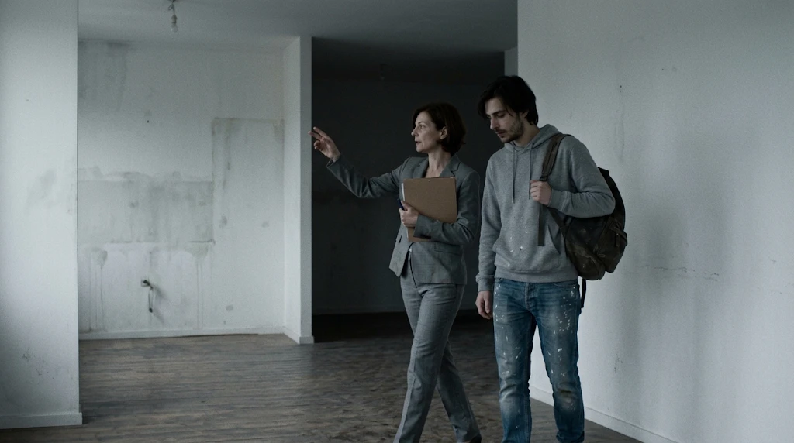 | 1 | 1 | Plano abierto | Sí | No | Día. Andrea, mujer de 45 años con traje sastre gris y carpeta, recorre el depa vacío señalando la cocina. Luca la sigue con mochila al hombro. Luz gris de día. Sin muebles. | Presenta el espacio vacío y a los personajes. | |
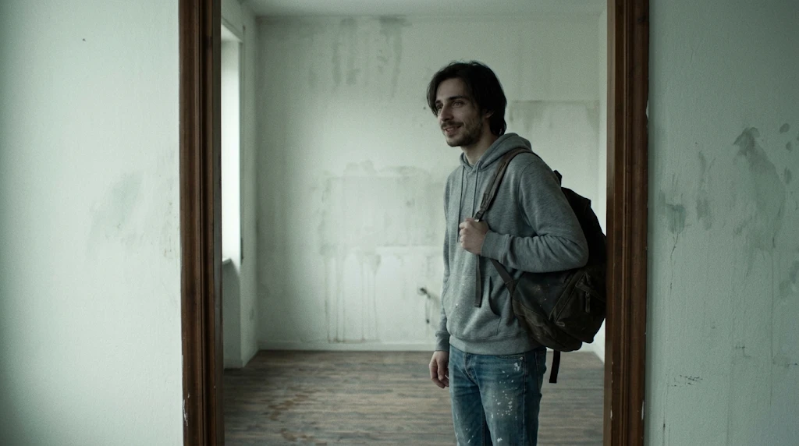 | 1 | 2 | Plano medio | Sí | No | Día. Luca en el marco de la puerta de un cuarto vacío que será su estudio. Mira la luz de la ventana y asiente despacio, con esperanza. | Su ilusión, lo que se va a romper. | |
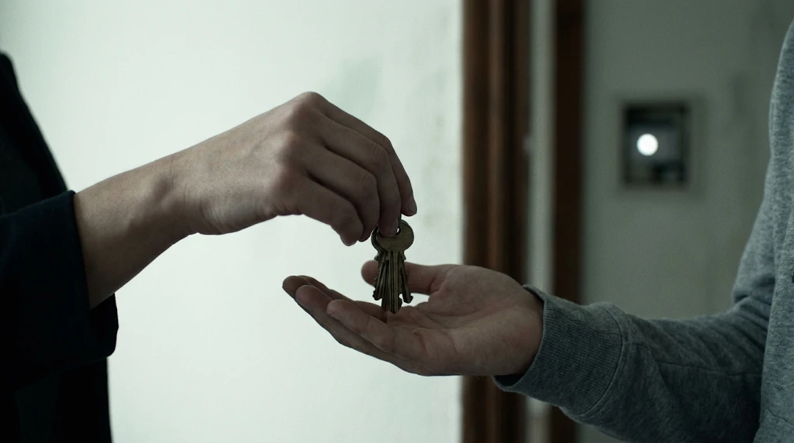 | 1 | 3 | Detalle | No | Sí | Día. La mano de una mujer entrega llaves a la mano de un hombre joven. Al fondo, desenfocado, el dispositivo en la pared. | Primera aparición de Vera. | |
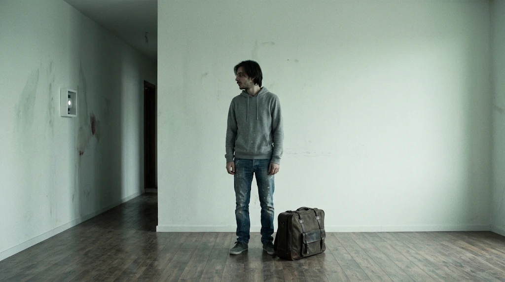 | 2 | 1 | Plano abierto | Sí | Sí | Tarde. Luca solo en el centro de la sala vacía, con una maleta, mirando el dispositivo de luz del pasillo. | La relación Luca–Vera. | |
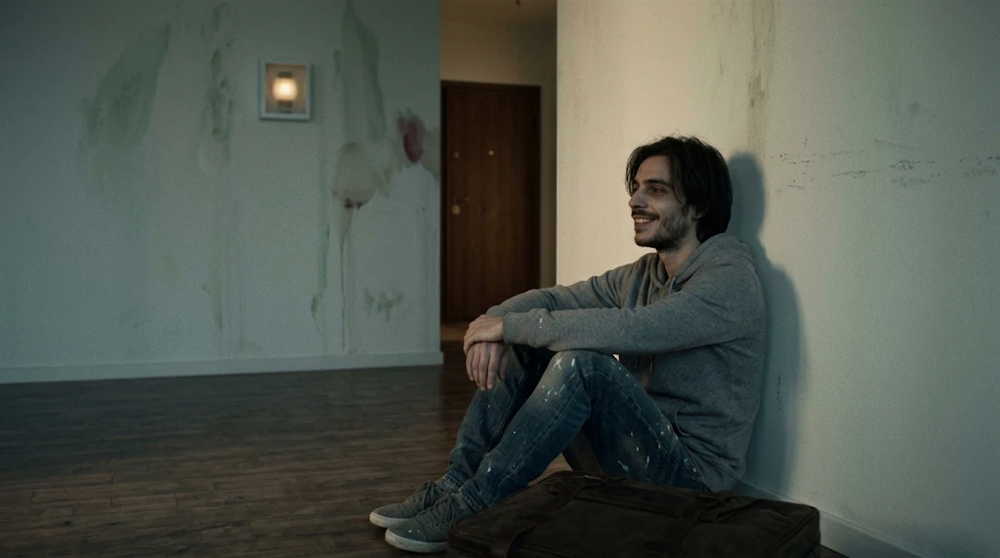 | 2 | 2 | Plano medio | Sí | No | Tarde. Luca sentado en el piso contra la pared, sonriendo relajado. Sala vacía, luz cálida atenuada. | El punto más alto antes de la caída. | |
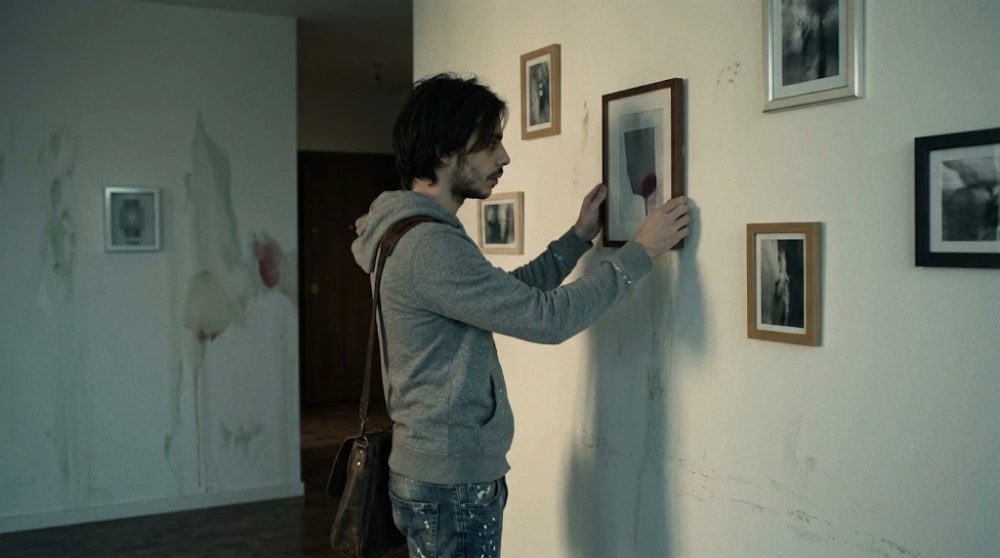 | 3 | 1 | Plano medio | Sí | No | Tarde. Luca cuelga un cuadro en una pared blanca con mucha precisión. Ya hay otros colgados. | Establece los cuadros que luego caen. | |
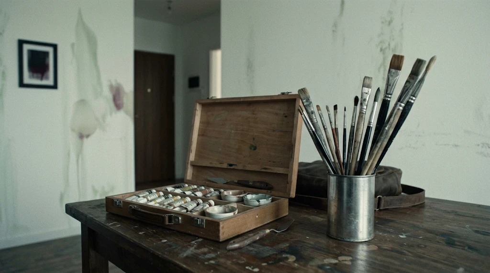 | 3 | 2 | Detalle | No | No | Tarde. Pinceles ordenados por tamaño sobre una mesa de madera junto a una caja de óleos abierta. | Lo meticuloso que es Luca. | |
| Por generar | 3 | 3 | Plano medio | Sí | Sí | Tarde. Luca con una taza de café frente a un caballete con lienzo en blanco. Al fondo, la luz blanca del asistente. | Vera siempre presente. | |
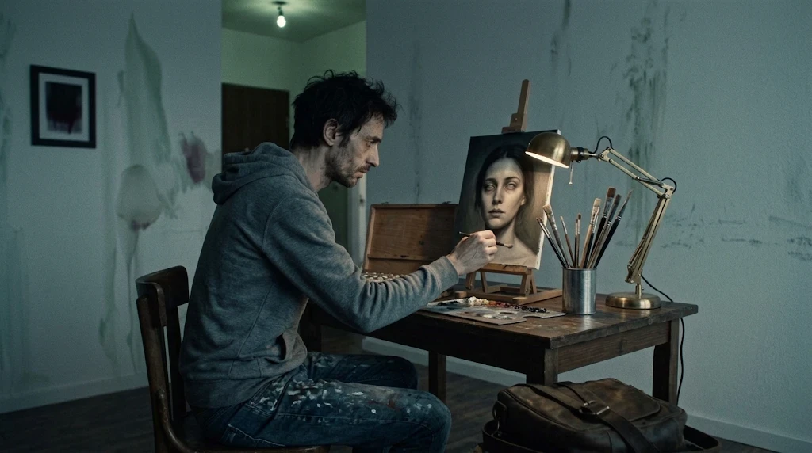 | 4 | 1 | Plano medio | Sí | No | Noche. Luca pinta el retrato casi terminado de una mujer, iluminado por una lámpara cálida. Las luces del techo parpadean. | Primera señal. Referencia del cuadro v1. | |
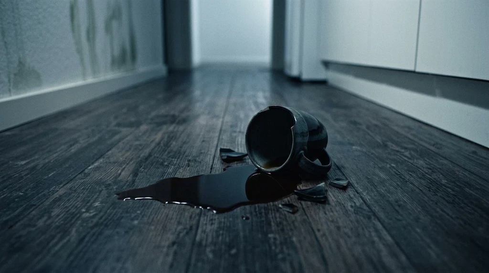 | 4 | 2 | Detalle | No | No | Noche. Una taza tirada en el piso de la cocina y el café derramado extendiéndose. Luz fría. | Guía para el efecto de la taza. | |
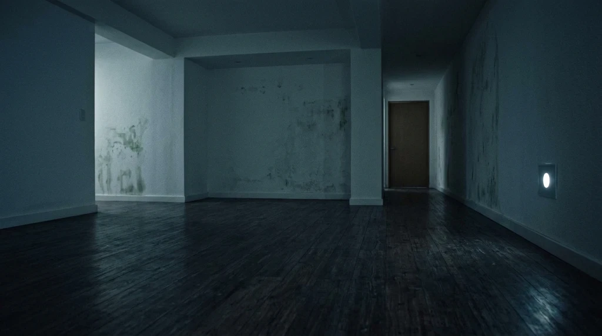 | 4 | 3 | Plano abierto | No | Sí | Noche. Sala oscura y vacía, solo el círculo blanco del asistente encendido. Puerta del cuarto cerrada. | Cierra la noche 1. | |
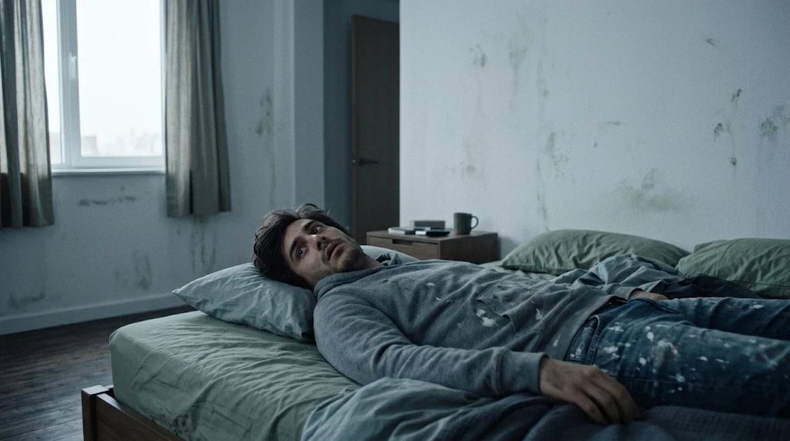 | 5 | 1 | Plano medio | Sí | No | Mañana. Luca boca arriba en su cama abre los ojos extrañado. Luz gris por la ventana. | Aparece “la visita”. | |
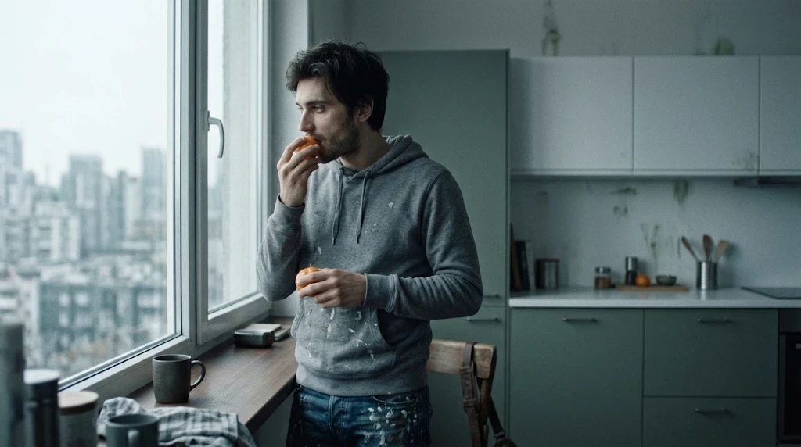 | 6 | 1 | Plano medio | Sí | No | Mañana. Luca come una mandarina junto a la ventana de la cocina. Ciudad desenfocada afuera. | La calma antes del golpe. | |
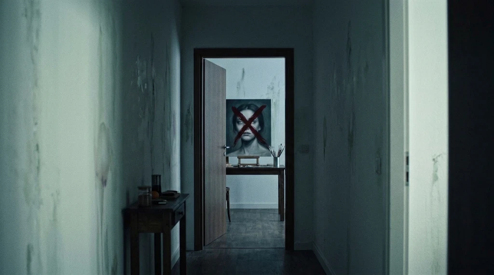 | 6 | 2 | POV desde el pasillo | No | No | Mañana. Desde el pasillo, la puerta del estudio abierta. Al fondo, el retrato tachado con una gran cruz roja. | Revela el daño. | |
| Por generar | 6 | 3 | Detalle | No | No | Mañana. Retrato al óleo de una mujer cubierto por una cruz roja de trazos gruesos y erráticos. Pintura fresca que escurre. | Referencia para pintar el cuadro v2. | |
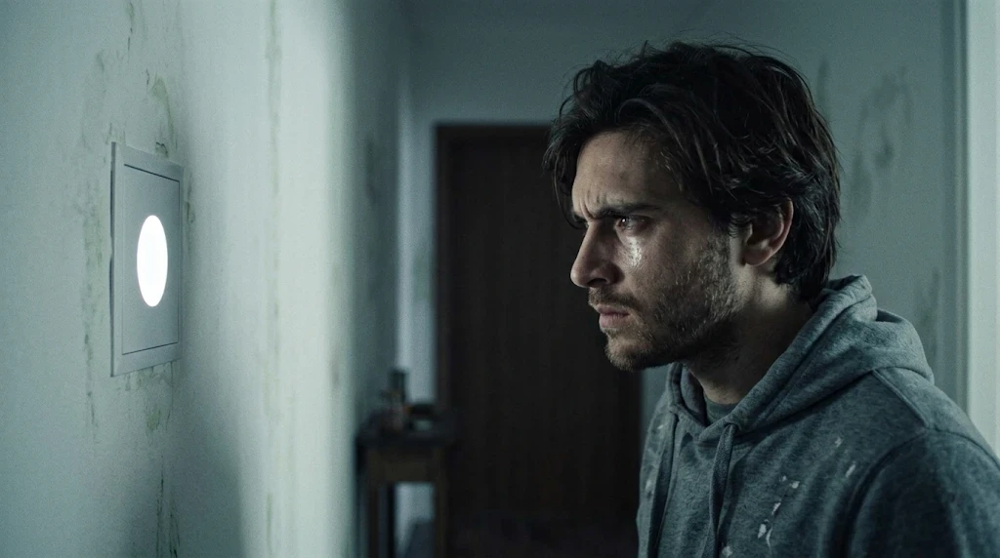 | 6 | 4 | Close-up | Sí | Sí | Mañana. Luca mira fijamente el dispositivo, enojado y desconcertado. La luz blanca se refleja en su cara. | Primer choque con Vera. | |
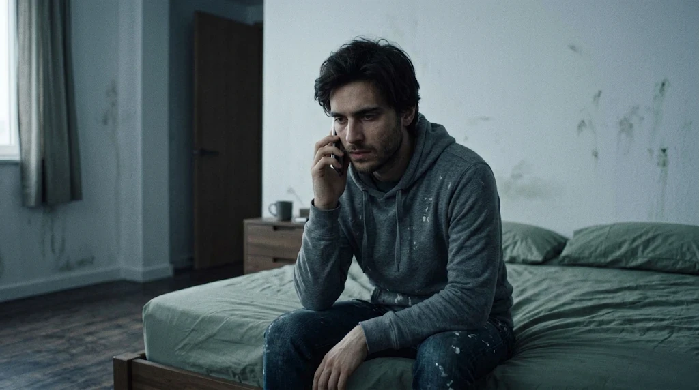 | 7 | 1 | Plano medio | Sí | No | Mañana. Luca en el borde de la cama hablando por celular, tranquilo pero preocupado. | La presión del encargo. | |
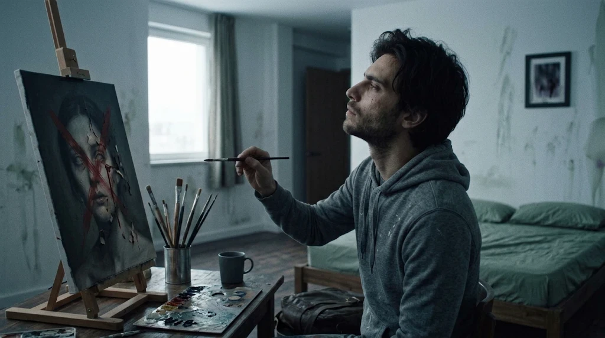 | 8 | 1 | Plano medio | Sí | No | Tarde. Luca frente al retrato dañado, lo estudia con la cabeza inclinada y un pincel en la mano. | Referencia del cuadro v3. | |
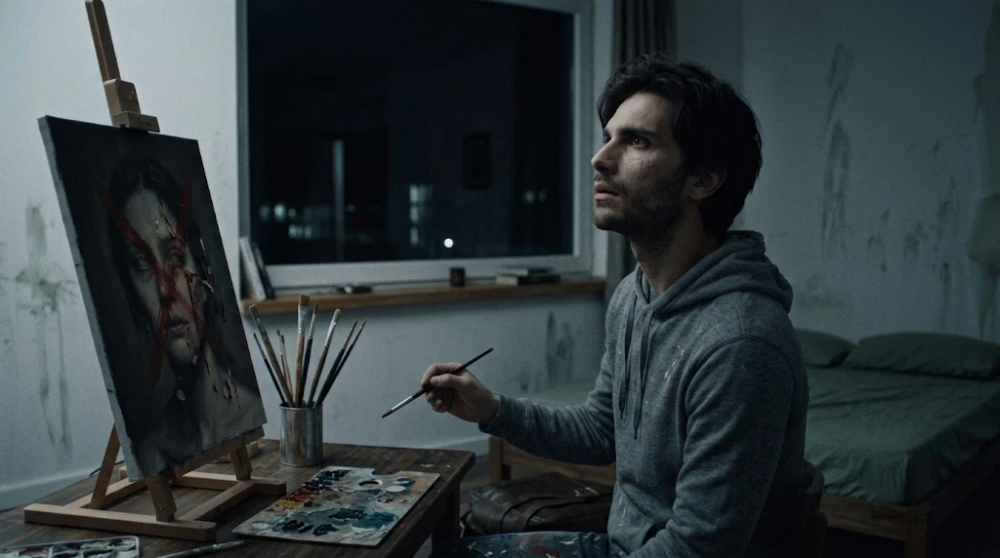 | 9 | 1 | Plano medio | Sí | No | Noche. Luca levanta la vista del lienzo con el pincel detenido, escuchando. Ventana oscura detrás. | Arranca la noche 2. | |
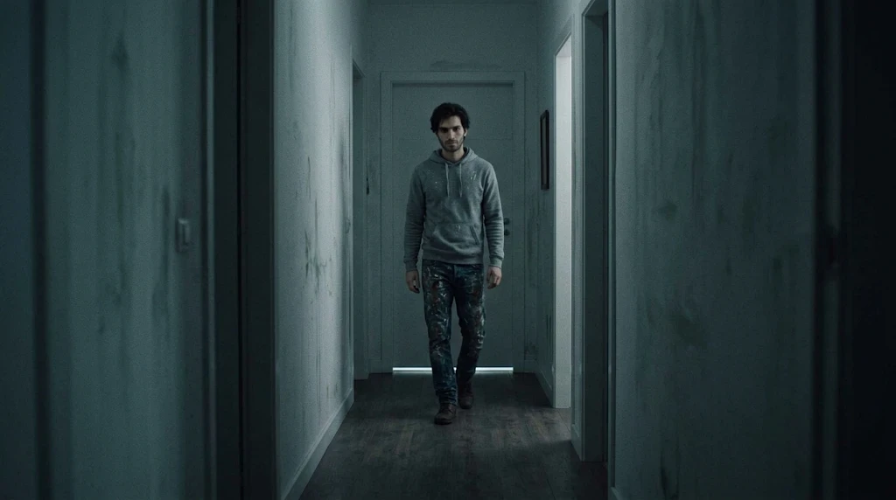 | 10 | 1 | Plano abierto | Sí | No | Noche. Luca camina despacio por el pasillo oscuro hacia el baño. Sale luz por debajo de la puerta. | Construye la tensión. | |
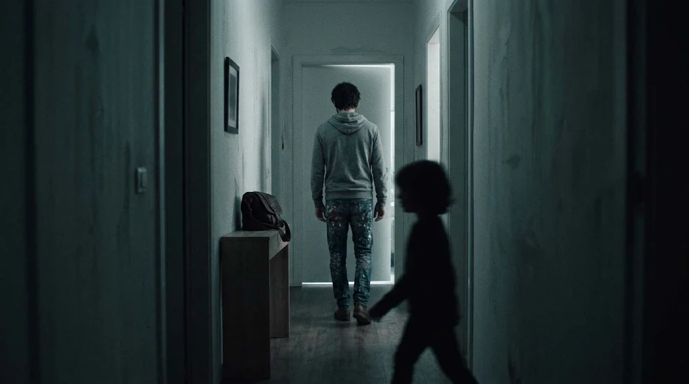 | 10 | 2 | Plano abierto | Sí | No | Noche. Luca de espaldas hacia el baño. Detrás, en primer plano, una silueta pequeña del tamaño de un niño cruza, muy desenfocada y sin rasgos. | El susto clave. Guía para el doble. | |
| Por generar | 11 | 1 | Plano medio | Sí | No | Noche. Luca en la puerta del baño. Regadera abierta, vapor, nadie dentro. | Falsa alarma. Referencia del vapor. | |
| Por generar | 12 | 1 | Plano medio | Sí | Sí | Noche. Luca recargado en la pared del pasillo con los ojos cerrados. Junto a él, la luz del asistente. | “¿Cuántas personas hay?” | |
| Por generar | 12 | 2 | POV | No | No | Noche. Al fondo del pasillo, la puerta del estudio entreabierta con una lámpara encendida. Nadie visible. | Miedo a lo que no se ve. | |
| Por generar | 12 | 3 | Close-up | Sí | Sí | Noche. Cara de Luca asustado, iluminada solo por la luz blanca del asistente. | El rezo en latín. | |
| Por generar | 13 | 1 | Plano medio | Sí | No | Noche. Luca en el sillón fumando, cerveza en mano, mirando un programa de cocina. Luz azulada de la TV. | Intenta normalizar. Guía de luz. | |
| Por generar | 13 | 2 | Detalle | No | No | Noche. Tres cuadros caídos en el piso frente a la pared. | Resultado del efecto. | |
| Por generar | 13 | 3 | Plano medio | Sí | No | Noche. Luca paralizado mira de reojo. Al fondo, una silueta pequeña y desenfocada cruza al estudio. | Ya ve la figura. | |
| Por generar | 13 | 4 | Plano medio | Sí | Sí | Noche. Luca grita en el pasillo con todas las luces encendidas, frente al dispositivo. | El quiebre emocional. | |
| Por generar | 14 | 1 | Plano abierto | Sí | No | Noche. Luca en el piso de su cuarto oscuro, espalda contra la puerta, rodillas al pecho, mirando el celular. | Soledad total. | |
| Por generar | 14 | 2 | Detalle | No | No | Noche. Una línea de luz blanca se filtra por debajo de la puerta cerrada, en total oscuridad. | Vera sigue ahí. | |
| Por generar | 15 | 1 | Plano abierto | Sí | Sí | Noche. Sala en penumbra, Luca solo de pie en el centro. La única luz es el círculo blanco del asistente. | Arranca el exorcismo. | |
| Por generar | 15 | 2 | Close-up | Sí | Sí | Noche. Luca repite palabras en voz baja, la cara apenas iluminada por una luz blanca muy tenue. | Empieza a perder el control. | |
| Por generar | 15 | 3 | Close-up | Sí | No | Noche. Rostro de Luca con la mirada vacía, la cabeza inclinada y una sonrisa lenta que no parece suya. | El plano más importante. Guía de actuación y maquillaje. | |
| Por generar | 15 | 4 | Plano abierto | No | No | Noche. La pared del pasillo en oscuridad total. El dispositivo está apagado por primera vez. | La última imagen. |